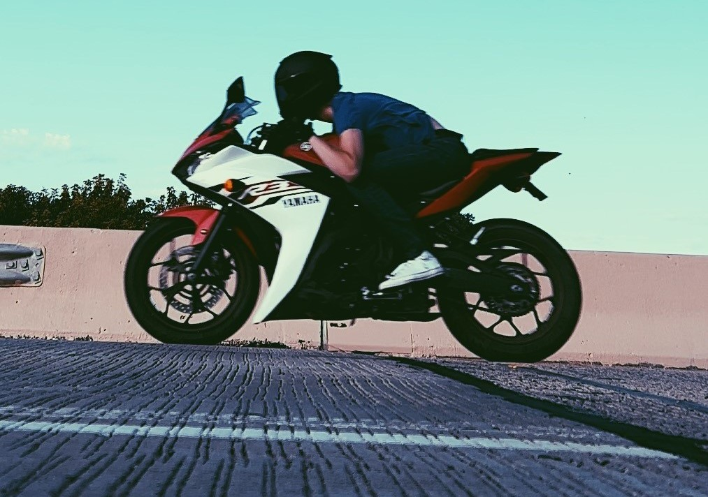
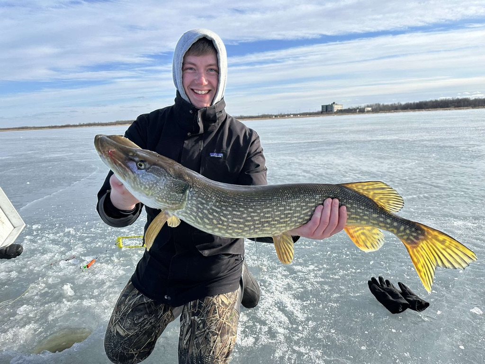
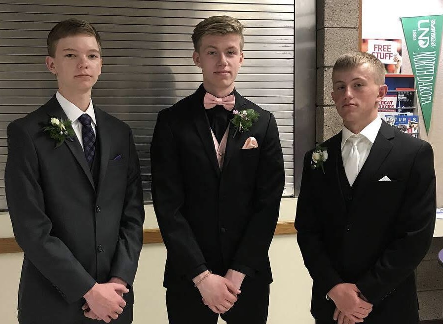
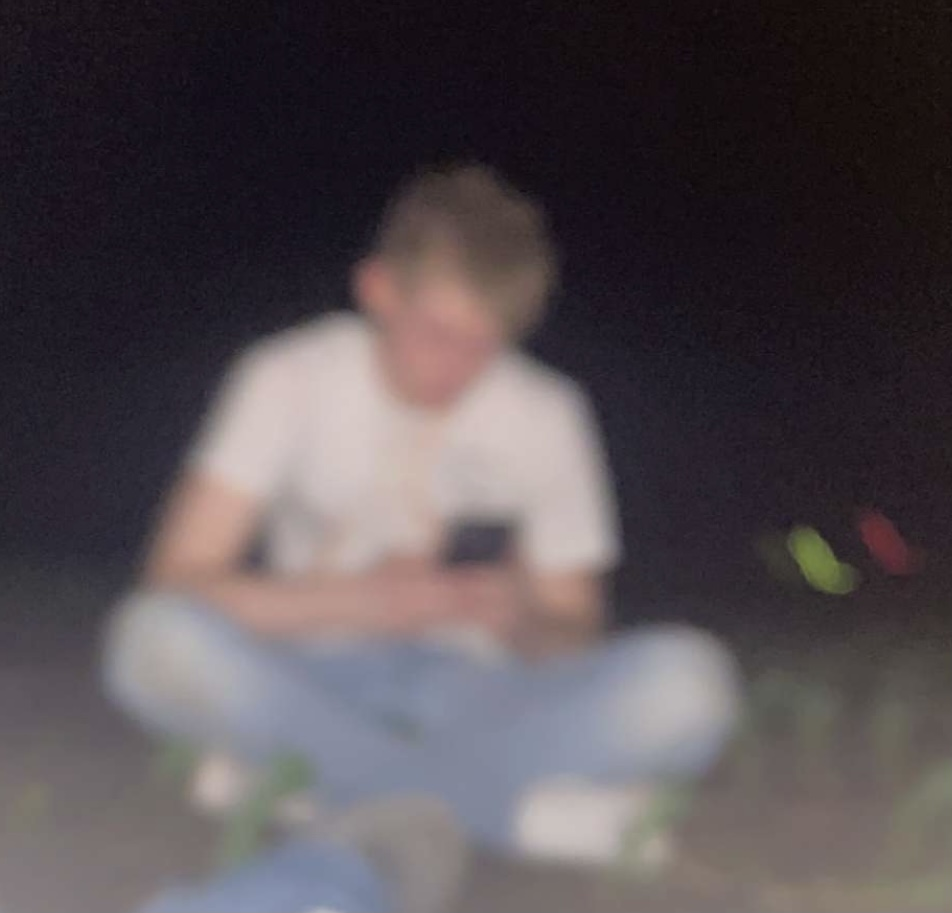
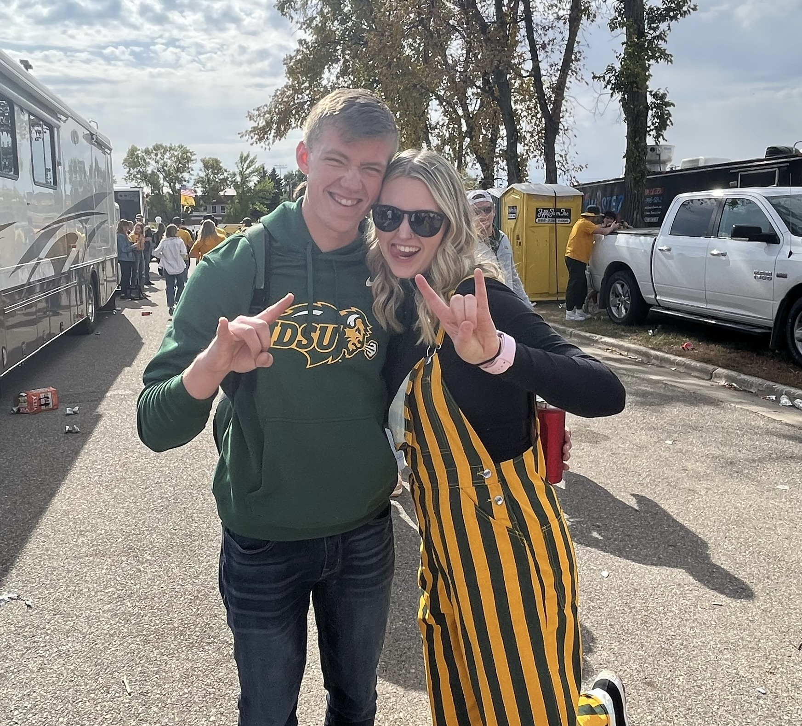
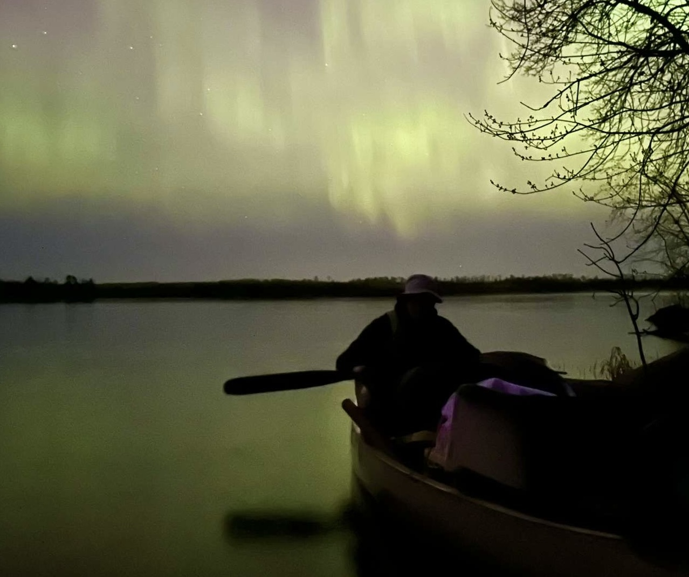
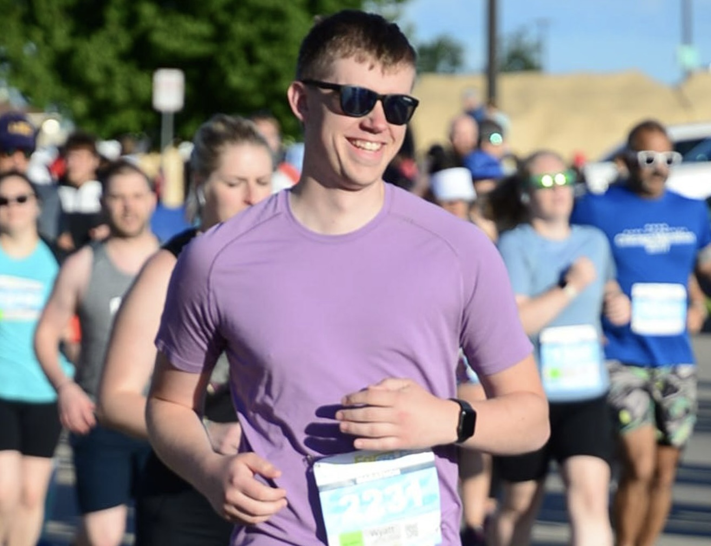
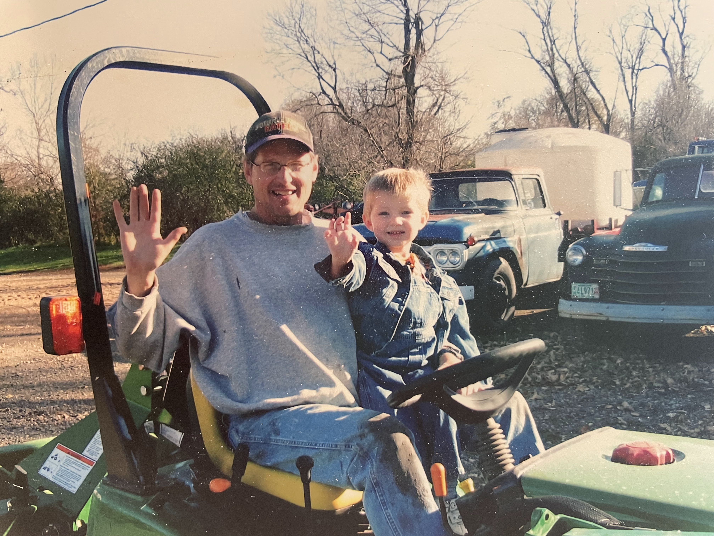

Hello! My name is Wyatt. I am 23 years old and work as a software engineer at 701x. I graduated from NDSU in the spring of 2023 with a B.S. in Computer Science. In my free time, I like to run, hunt, and work on personal projects. My biggest short-term goal is currently training for the Kiawah Island Marathon in December.
During my time as an intern at ComDel, I worked on numerous projects that were mainly used in the manufacturing facility. My favorite project was a Visual Basic program that had to do with a plastics leak tester. The program would connect to the tester, read values each time a test was run, and then display those values on a graph. This helped workers easily determine if there were any plastics which did not pass the leak test
I started as an intern in October 2022 and started full-time right after graduating in 2023. I have gained a great number of skills in my time here and am grateful for that. Starting mainly as a frontend dev, over the past few years I've worked on many diverse projects in different roles. I currently hold the position of Software Engineer II and work on various fullstack features and projects.







